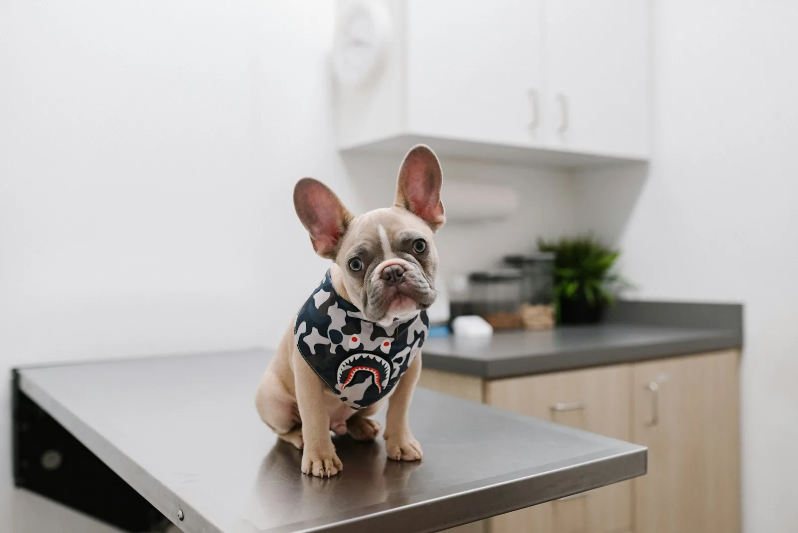
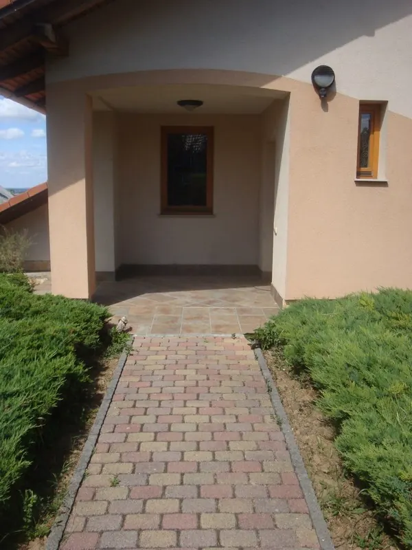
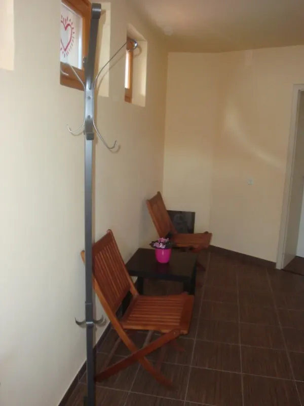

Vizsgálat és kezelés
Bűzmirigy-tisztítás, karomvágás, fog- és csőrvágás, valamint szemészeti, fogászati, bőrgyógyászati, belgyógyászati, kardiológiai, szülészeti és onkológiai problémák.

„Mivel nem csupán állatorvos, hanem gyakorló állattartó is vagyok, átérzem milyen szoros kapcsolat áll fenn Ön és kis Kedvence között.” – Dr. Máté Péter
Interneten ezekre kérhet időpontot, hétköznap 8 és 15 óra között:
Vérvételre, ultrahangra, műtétre és fogkő-eltávolításra csak telefonon vagy személyesen egyeztetünk időpontot. Lemondani vagy módosítani is telefonon lehet.
Telefon hétköznap 8–19 óra között:
+36 30 394 3261„A célom ezen kapcsolat minél hosszabb távú ápolása, védelme széleskörű szolgáltatásokkal, információ-átadással, és táplálási tanácsokkal.”
Dr. Máté Péter állatorvos
2015. március 30-án nyílt meg a Kokszi Maxi Állatorvosi Rendelő Pécs-Újhegyen. Elsősorban kutyák és macskák ellátásával foglalkozunk, de alapellátást tudunk biztosítani kisemlősök és díszmadarak számára is.
Fontosnak tartjuk a megelőzést: védőoltások a veszettség, a szopornyica, a parvovírus, a macskanátha, a macskaleukózis vagy a kennelköhögés ellen, a kölykök korai chipes megjelölése, és egész éves védekezés a bolhák és kullancsok ellen.
A rendelési időben elsősorban rövid, ambuláns beavatkozásokat végzünk – a mindennapi állattartás apró bajaitól az összetettebb kivizsgálásig.
Bűzmirigy-tisztítás, karomvágás, fog- és csőrvágás, valamint szemészeti, fogászati, bőrgyógyászati, belgyógyászati, kardiológiai, szülészeti és onkológiai problémák.
Életmódtól és tartástól függően személyre szabott oltási program. Mikrochip-beültetés és állatútlevél.
Hasűri szervek, húgy- és nemi szervek vizsgálata, vemhességi vizsgálat. Idősebb, tünetmentes kutyánál és macskánál szűrésként is javasoljuk.
Műtőnk felszereltségének köszönhetően sok faj és fajta biztonságos altatása lehetséges: ivartalanítás, daganateltávolítás, ultrahangos fogkőleszedés, emésztőrendszeri műtétek (például idegentest eltávolítása), sérvek, szemhéjkorrekció.
A vérvételt helyben elvégezzük, és a mintát továbbküldjük laborba. Az eredmény általában 2–3 napon belül elkészül.
Féreghajtás legalább háromhavonta, szúnyogszezonban havonta bőr- és szívférgesség ellen; egész évben védelem a bolhák és kullancsok ellen.
87 értékelés a Google-on
ajánlja a Facebookon (21 értékelés)
„A doktor úr ért az állatok nyelvén.”Google-vélemény
„Az eddigi legjobb… kedvesen bánik az állatokkal, sok tippet és tanácsot adnak.”Google-vélemény (rövidítve)
Előre tudni szeretné, mennyibe kerül? Itt a leggyakoribb tételek. Egyes beavatkozások díja a felhasznált anyagok és gyógyszerek mennyiségétől függően eltérhet.
Az árak forintban értendők, és az ÁFÁ-t tartalmazzák.
| Veszettség elleni oltás | 10 500 Ft |
|---|---|
| Kombinált oltás | 13 500 Ft |
| Veszettség + kombinált oltás | 22 000 Ft |
| Kennelköhögés elleni oltás | 16 000 Ft |
| Mikrochip | 15 000 Ft |
| Útlevél és kiállítása | 19 000 Ft |
| Vizsgálat + kezelés | 9 500 Ft-tól + gyógyszer |
|---|---|
| Karomvágás | 7 000 Ft |
| Bűzmirigy-nyomás | 5 000 Ft |
| Fogkő-eltávolítás | 29 000 Ft-tól |
| Kutya | Macska | |
|---|---|---|
| Hím | 42 000–64 000 Ft | 21 000 Ft |
| Nőstény | 60 000–82 000 Ft | 35 000 Ft |
Pécs-Újhegy, Koksz u. 41/B. Nézze meg, hogyan néz ki a rendelő, mielőtt elindul – így elsőre ráismer.

A térköves bejárón jut el a rendelő ajtajáig.

A betegellátás sorrendje nem mindig az érkezési sorrend – türelmüket köszönjük.
Nem találja a választ? Hívjon hétköznap 8 és 19 óra között, vagy írjon: matepvet@gmail.com
Nincs. A rendelő sürgősségi betegellátást és ügyeletet nem vállal, és hétvégén zárva van. Sürgős esetben a pécsi önkéntes rendelői ügyeletet hívja, mielőtt elindulna: 30/970-5419.
Telefonon hétköznap 8 és 19 óra között a +36 30 394 3261-es számon. Interneten védőoltásra, féregtelenítésre, betegvizsgálatra és konzultációra kérhet időpontot, legkésőbb az előző nap éjfélig. Vérvételre, ultrahangra, műtétre és fogkő-eltávolításra csak telefonon vagy személyesen.
Elsősorban kutyákat és macskákat, de alapellátást biztosítunk kisemlősöknek és díszmadaraknak is. Műtétet rágcsálókon (nyúl, degu, csincsilla, hörcsög) és görényeken is végzünk.
Helyben laborvizsgálat nincs, de a vérvételt elvégezzük, és a mintát továbbküldjük. Az eredmény általában 2–3 napon belül elkészül.
A 4 hónapos kort elért kutyák csak mikrochippel megjelölve tarthatók, és tulajdonosváltáskor is kötelező a jelölés. Macskánál nem kötelező, de segít az elveszett állat megtalálásában, és az állatbiztosítás feltétele.
A Hill's kutya- és macskatápokat. Mielőtt változtatna kedvence táplálásán, kérje ki az állatorvos véleményét.